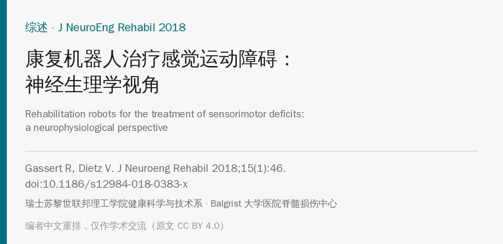
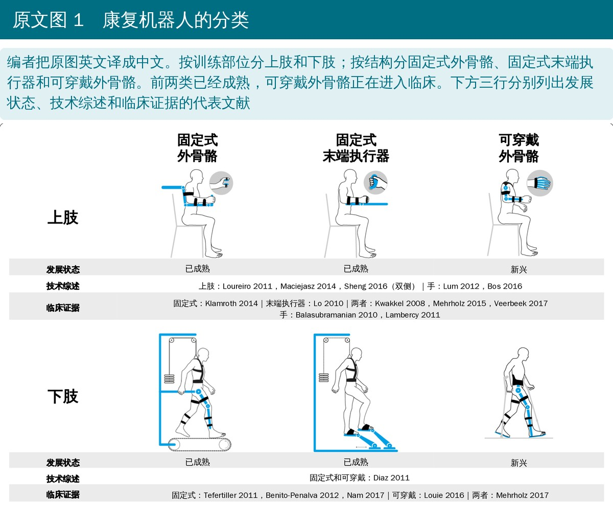
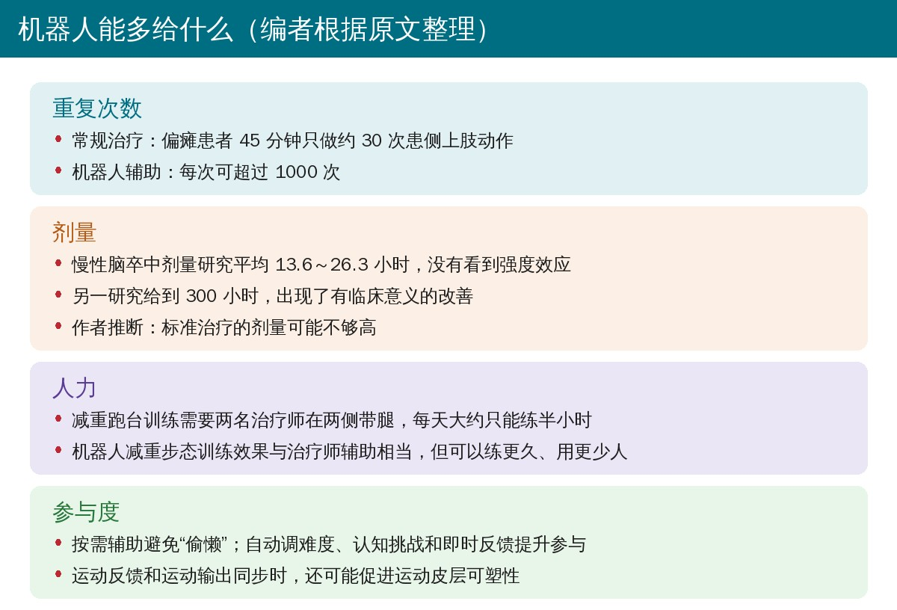
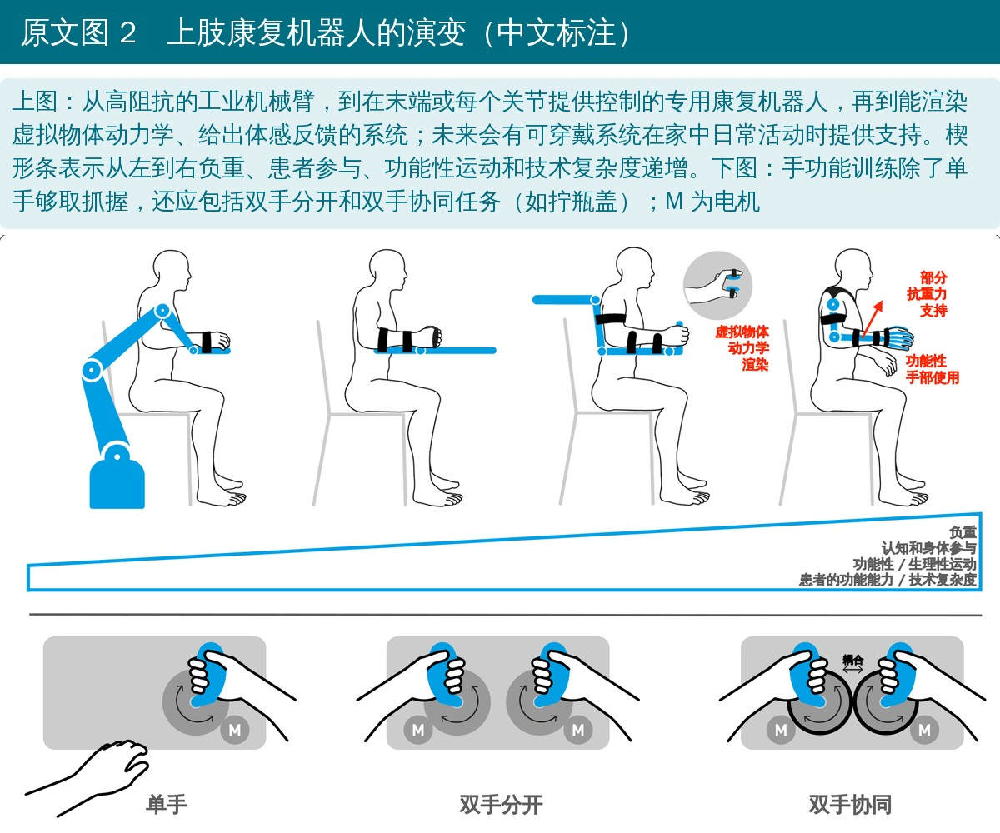
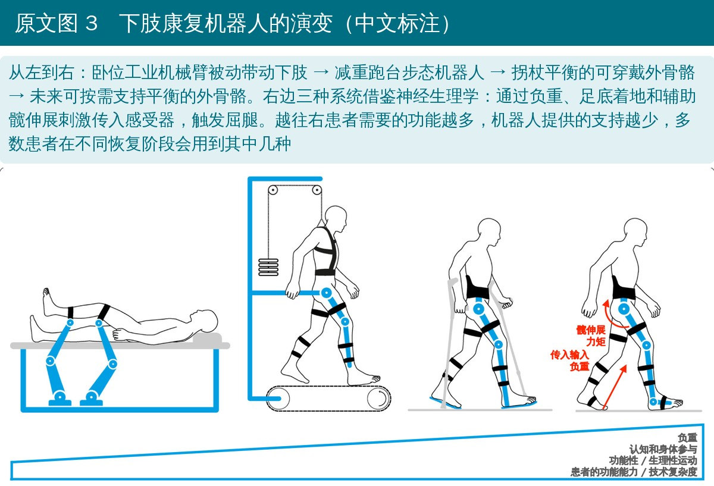
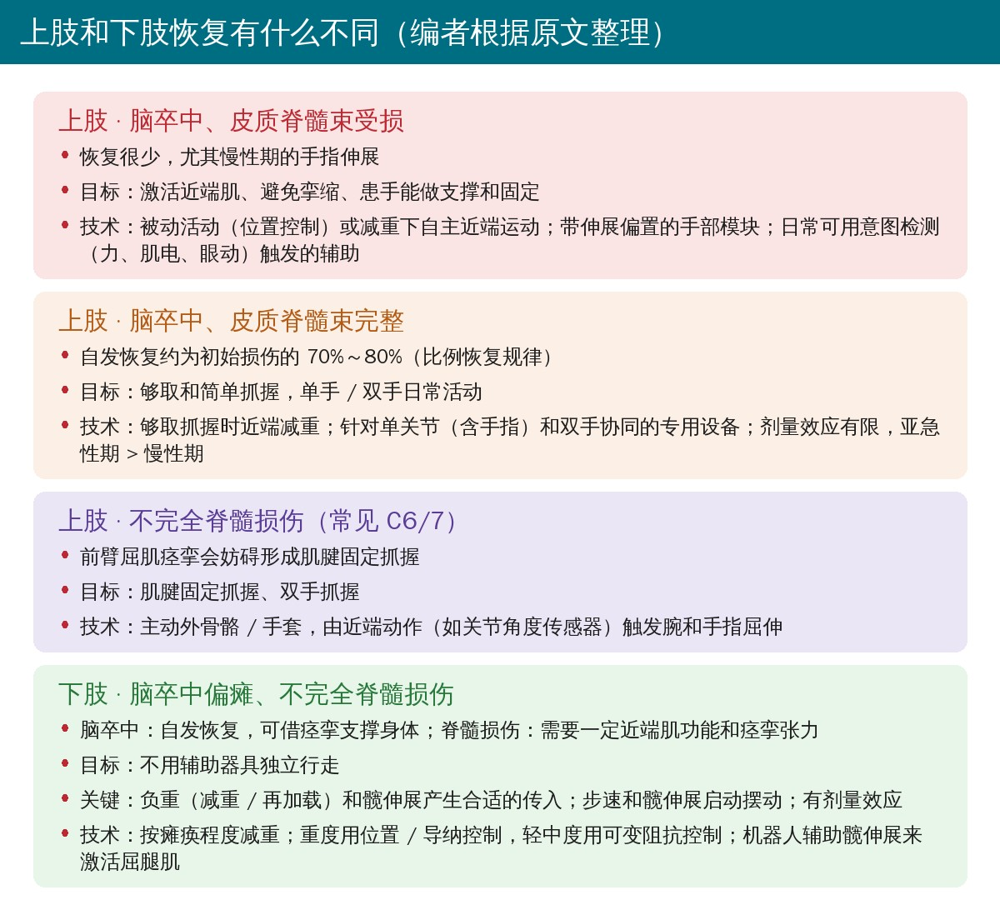

🔖原文信息（编者中文重排）
📚 文献信息
▪ Gassert R, Dietz V. Rehabilitation robots for the treatment of sensorimotor deficits: a neurophysiological perspective. J Neuroeng Rehabil. 2018;15(1):46. doi:10.1186/s12984-018-0383-x
▪ 中文题目：康复机器人治疗感觉运动障碍：神经生理学视角
▪ 作者来自瑞士苏黎世联邦理工学院（ETH）健康科学与技术系、Balgrist 大学医院脊髓损伤中心
▪ 文章类型：叙述性综述，开放获取（CC BY 4.0）
过去几十年，用于中枢神经损伤后感觉运动康复的机器人发展很快，但很多是技术驱动的，临床应用和影响有限。作者认为：康复机器人应该先从神经生理学出发再设计，这需要工程师、治疗师和临床神经生理学家从一开始就合作。
• 历史很长：1910 年就有电机驱动的“运动治疗装置”专利；1970 年代出现第一批用于脊髓损伤的动力外骨骼；1989 年 MIT-MANUS 开启神经康复机器人新时代；1994 年开始研发 Lokomat
• 三大类：固定式外骨骼、固定式末端执行器、可穿戴外骨骼（图 1）
• 证据现状：少数随机对照试验显示，机器人辅助治疗与剂量匹配的常规治疗效果相当；多数设备从未做过临床评估，或只做过几例的小样本试验
• 很多研究想证明机器人优于常规治疗，但没有成功——何况目前连针对个体的最佳治疗方案都还没有共识

🔖原文图 1（编者把图中英文译成中文）
• 每年约 1000 万人脑卒中后存活，超过 25 万人脊髓损伤后存活（约 60% 为不完全损伤）；肌肉激活不足导致的无力是主要残疾
• 脑卒中和脊髓损伤的自发恢复大多发生在前 3 个月，治疗效果很难和自发恢复分开
• 多数脑卒中患者恢复到初始损伤的 70%～80% 后进入平台；有人据此认为上肢恢复大多是自发的
• 康复的目标不是恢复“正常”动作，而是让患者用“更简单”的动作尽量独立完成日常活动；代偿策略（包括轮椅等辅助器具）也很重要
• 痉挛不全是坏事：活动能力较好的患者可以借痉挛张力支撑身体，像“拐杖”一样站立和行走；但重度患者痉挛可能加重，需要用药
• 现有证据提示恢复需要患者主动参与，强度（单位时间重复次数）和剂量（时长）在动物和人体研究中都有正面作用
• 但一项慢性脑卒中研究平均只给了 13.6～26.3 小时，没有看到强度效应；另一项给到 300 小时，出现了有临床意义的改善——作者认为标准治疗的剂量可能不够
• 多关节任务训练不一定改善日常活动表现，也不优于单关节机器人训练；但也有证据显示任务训练能迁移到未训练的任务
• 下肢（行走）方面，脑卒中的发现通常也适用于脊髓损伤，例如训练强度对步行结局的正面作用已在脊髓损伤中得到证实

🔖编者根据原文整理
• 手和手指的精细动作依赖皮质-运动神经元直接投射，所以中枢损伤后上肢、尤其是手功能往往受损严重
• 脑卒中：结局主要看皮质脊髓束是否完整。受损者即使强化训练，手和手指恢复也很少；完整者按比例恢复规律恢复约 70%～80%，训练效果较小，但早期高剂量训练可能更好
• 颈髓损伤：C5/C6 为“被动”手功能，C6/7 常见肌腱固定抓握（伸腕带动手指闭合），需要一定的痉挛张力
• 早期为弛缓性瘫痪；出现一些痉挛后再开始训练残存肌功能，重点放在简单够取和抓握；之后前臂屈肌痉挛往往比伸肌更明显
• 强制性使用疗法的思路是减少半球间抑制、克服“习得性废用”，但作者认为它并未被证明优于其他方法
• 训练中支持要尽量少，让患者最大程度出力；但多数脑卒中患者需要减重（抗重力支持），否则肩外展会诱发肘、腕、手指的屈曲协同
• 双手训练：可能比单手训练更能改善患手够取抓握，但没有明确证据优于强制性使用疗法；双手协同动作（如拧瓶盖、切面包）时两侧半球“神经耦合”，健侧半球可能帮助患手，效果还待验证
• 手指功能恢复有限，但开手、握手这类基本功能仍应训练；体感常受损，需要视觉代偿，部分患者能通过训练恢复
• 从工业机械臂发展到平面 / 三维末端执行器（MIT-MANUS、Gentle/S），再到加入腕、手（Gentle/G）和三关节外骨骼（ARMin）
• 这些系统都能部分或完全减重，减少屈曲协同、扩大手的活动范围；但结构复杂、齿轮传动带来的惯性限制了交互质量，自由度和交互质量要取舍
• 全臂动力外骨骼主要适合脑卒中早期、上肢重度瘫痪者；被动减重装置也能达到类似效果
• 应加入双手和双手协同训练：两台单手设备镜像组合，或用控制把两台设备虚拟耦合
• 一篇综述发现 30 个手部康复机器人中只有 25% 做过临床测试；聚焦开手、握手的简单设计可能就够了，软体机器人手套还能在日常活动中佩戴
• 训练任务要有视觉和触觉反馈，用虚拟物体动力学训练体感；嵌入游戏提高动机，虚拟现实对脑卒中后上肢功能可能有益

🔖原文图 2（编者把图中英文译成中文）
• 行走比上肢动作更自动化；皮质脊髓投射主要用于主动改变步态，比如调整方向、跨越障碍，因此对屈肌的投射强于伸肌
• 脑卒中患者通常可以把患腿当“拐杖”支撑身体，恢复基本行走；脊髓损伤患者需要一定的近端肌功能才能成功训练
• 减重跑台训练：源于猫脊髓损伤模型；在不完全脊髓损伤中与常规康复效果相当，在脑卒中中不优于一般运动训练；需要两名治疗师，每天只能练约半小时
• 步速：按运动生理原则逐步提高跑台速度，比常规步态训练效果更好；在真实环境中训练效率最高
• 重度脊髓损伤患者减重到最多 80% 站在跑台上，可诱发接近正常时序的自动迈步肌电，这由支撑期负重感受器的传入触发；这种生理性肌肉激活是训练有效的前提
• 支撑末期髋伸展是启动摆动、切换肌肉激活的关键刺激
• 机器人别把腿全包了：多数步态机器人强制带动屈腿、患者被动，长期会导致屈肌运动神经元稀疏和功能障碍
• 人类行走保留四足协调，摆臂会增加腿部肌肉活动，可以考虑纳入训练
• 机器人减重跑台训练效果与治疗师辅助的地面行走相当，但能用更少人练更久；系统综述显示，脑卒中患者接受机电 / 机器人步态训练后更可能独立行走
• 支持要随恢复不断下调：从固定式外骨骼过渡到末端执行器，再到可穿戴外骨骼或普通助行器
• 早期设备为几乎完全瘫痪的脊髓损伤患者设计，扭矩大、输出阻抗高；用于脑卒中和不完全损伤时，需要新的控制方法和低固有阻抗设备
• 可穿戴外骨骼能在真实环境中训练，但重量和复杂度限制了驱动自由度和“透明度”（让开、不干扰的能力）
• 未来可调节每个关节的阻抗：强化髋伸展来触发生理性屈腿，让外骨骼被动跟随；能部分支持平衡后，双手可以离开拐杖、自然摆臂

🔖原文图 3（编者把图中英文译成中文）

🔖编者根据原文表 1 整理
• 无论用不用机器人，康复训练都应基于神经生理学；生理性的肢体肌肉激活可能是训练有效的标志
• 上肢训练效果比下肢有限，主要由皮质脊髓束完整性决定；但高强度、高剂量训练有益，尤其是脑卒中早期
• 机器人的优势：标准化、强度和剂量更高、支持可调、减轻治疗师体力负担，是常规治疗的理想补充
• 固定式外骨骼、末端执行器和可穿戴外骨骼的效果大致相当，选哪种取决于恢复阶段和个体损伤
• 即使把可塑性用到极致也不能完全恢复，所以领域应重视可穿戴系统：既能训练，又能在恢复平台后长期代偿
• 推广受成本和医保报销驱动，研究应寻找最简单有效的技术方案
• 叙述性综述：没有系统检索、没有证据分级，很多观点来自作者团队的经验和研究
• 利益冲突要注意：Dietz 是 Hocoma 公司（Lokomat 生产商）科学顾问委员会成员，并参与过 Lokomat 研发；Gassert 的教席由 ETH 基金会与 Hocoma 合作资助。原文已声明
• “比例恢复规律”有争议：文中多处以“恢复约 70%～80%”推论训练效果有限；编者注：此后有方法学研究指出该规律可能部分来自统计假象，引用时宜谨慎
• 不少机制证据来自动物：负重和髋伸展触发迈步的结论很多来自猫实验，在人身上的直接证据较少
• 设计建议多为推理：比如强化髋伸展触发屈腿、双手协同训练、简单开手握手设备，作者也承认效果尚待验证
• 价值在于框架：把上下肢、脑卒中和脊髓损伤的恢复规律和对应技术放在一张表里（表 1），对治疗师选设备、定目标很有参考价值
• 剂量说法前后不一：一处说早期高剂量训练能改善上肢结局，另一处又说皮质脊髓束受损时恢复“既不取决于方法也不取决于剂量”；两者针对的人群不同，但原文没有讲清楚边界
• 强制性使用疗法：原文引 Kwakkel 2015 综述说未见优于其他方法，而该综述总体认为强制性使用疗法对上肢运动功能有益，引用解读偏保守
• “旋后”位置：写 C5/C6 损伤靠“肘关节旋后”开手，旋后实际发生在前臂（桡尺关节）
• 痉挛分布的解释：说前臂屈肌痉挛更明显是因为“抗重力肌肌肉量更大”，前臂屈肌是否是抗重力肌要看体位，这个解释比较牵强
• 统计口径不清：“每年约 1000 万人脑卒中后存活、超过 25 万人脊髓损伤后存活”，没有说明是新发还是现存人数，也没有给来源
• 笔误：表 1 中“vial intention detection”（应为 via）、“intial”（应为 initial）
• 先判断恢复潜力，再定目标：上肢先看皮质脊髓束是否完整（结合运动诱发电位、影像），受损者重点放在近端功能、防挛缩和代偿策略
• 加量是关键：常规 45 分钟只有约 30 次上肢重复，机器人可以把重复次数和总时长提上去，适合作为补充而不是替代
• 支持“按需”给：能自己做的就不帮，减重和辅助随恢复逐步下调，避免患者“偷懒”
• 上肢减重：多数脑卒中患者在减重下才能做出功能性够取，避免诱发屈曲协同；被动减重装置也是选项
• 步态训练抓两点：尽量负重、强调支撑末期髋伸展；不要让机器人一直包办屈腿；逐步提高步速，尽早走到真实环境
• 按阶段换设备：重度先用固定式外骨骼，功能好转后换末端执行器、可穿戴外骨骼，最后到普通助行器
• 别忘了双手：日常大量动作要双手配合，可以加入双手分开和双手协同（如拧瓶盖）的训练
表 1 神经康复与结局的主要方面及其对康复技术的意义
| 部位 / 疾病 | 典型恢复过程 | 目标 | 康复方法 | 技术 |
|---|---|---|---|---|
| 上肢 · 脑卒中，皮质脊髓束受损 | 恢复很少，尤其慢性期；手 / 手指伸展受损 | 激活近端肌；避免挛缩；患肢用于支撑 / 固定 | 近端肌力训练；持续被动活动；代偿策略训练 | 治疗：被动活动（位置控制）或减重下自主近端运动；带伸展偏置的主动 / 被动手模块。辅助：通过意图检测（力、肌电、眼动）支持上肢 / 手运动（导纳控制） |
| 上肢 · 脑卒中，皮质脊髓束完整 | 自发恢复约为初始上肢 / 手损伤的 70%～80% | 够取和简单抓握；单手 / 双手日常活动 | 功能性够取 / 抓握和双手（协同）动作；强化腕 / 指伸肌；简单动作训练并迁移到日常活动；训练剂量效应有限：亚急性期 > 慢性期 | 治疗：够取 / 抓握时近端减重；用专用设备训练单关节（含手 / 手指）和（协同）双手训练（图 2）。辅助：被动近端减重 + 残存功能放大的主动腕 / 指支持（力 / 肌电控制） |
| 上肢 · 不完全脊髓损伤（常见 C6/7） | 前臂屈肌痉挛妨碍形成肌腱固定抓握 | 肌腱固定抓握；双手抓握 | — | 辅助：主动外骨骼 / 手套，由近端上肢动作（如关节角度传感器）触发腕和手指屈伸 |
| 下肢 · 脑卒中偏瘫 | 自发恢复；借痉挛支撑；迈步能力下降 | 不用辅助独立行走 | 通过负重（减重 / 再加载）和髋部感受器（髋伸展）在迈步中产生合适传入；步速和髋伸展（启动摆动）很重要；有剂量效应 | 治疗：按瘫痪程度减重；适配的运动支持（重度用位置 / 导纳控制，轻中度用可变阻抗控制；图 3）；机器人辅助髋伸展激活屈腿肌 |
| 下肢 · 不完全脊髓损伤（截瘫） | 需要一定近端肌功能和痉挛张力才能迈步 | 辅助 / 独立行走 | 同上 | 同上 |
注：皮质脊髓束，CST；日常活动，ADL；原表中下肢两行的康复方法和技术为合并单元格。
欢迎关注骨科康复小黄公众号，获取更多物理治疗的专业知识！
📄参考文献：
Gassert R, Dietz V. Rehabilitation robots for the treatment of sensorimotor deficits: a neurophysiological perspective. J Neuroeng Rehabil. 2018;15(1):46. doi:10.1186/s12984-018-0383-x
本文为中文解读，仅作学术交流：图片引自原文图 1～图 3（编者把图中英文译成中文覆盖原文位置），上下肢对比卡和机器人优势卡为编者根据原文整理，表格为编者翻译。原文以 CC BY 4.0 许可发表。